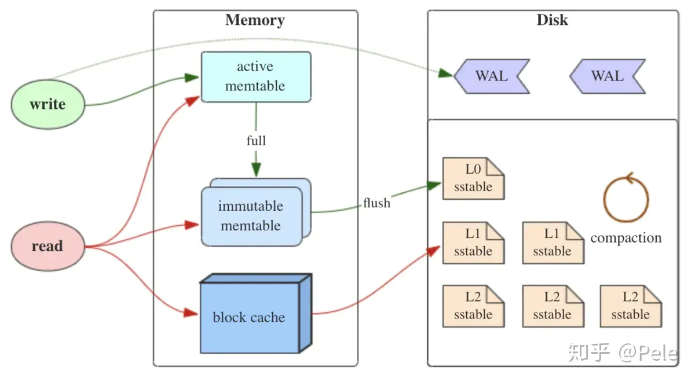
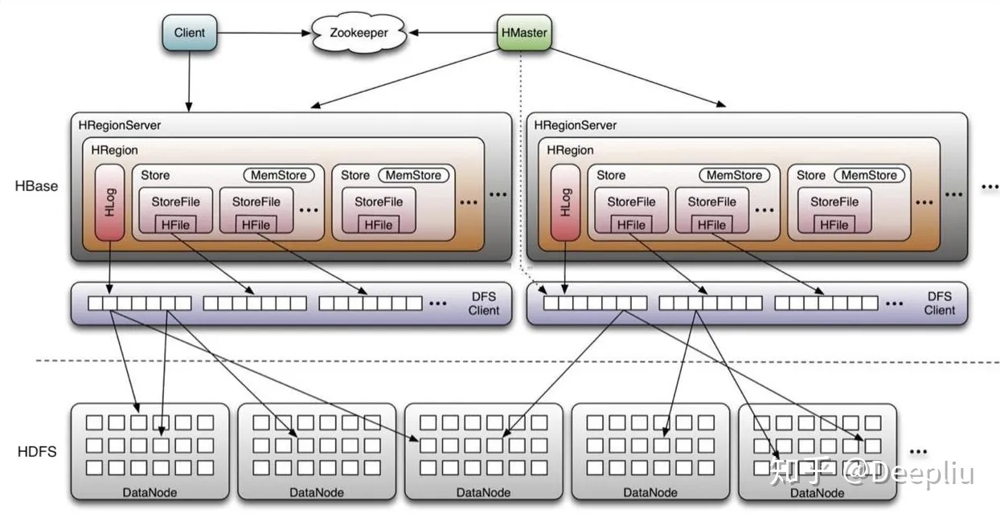

leveldb 概述
leveldb 的特性存在于以下几个方面：
- 键值对存储
- LSMTree 架构
- 多版本控制（MVCC）
leveldb 源码分布（Power by tokei）
===============================================================================
Language Files Lines Code Comments Blanks
===============================================================================
Autoconf 12 456 314 76 66
C 1 384 329 11 44
C Header 126 36462 19257 11961 5244
CMake 15 2412 1679 423 310
C++ 239 90266 65030 13026 12210
JSON 6 511 511 0 0
Python 54 14410 10575 1938 1897
Sass 2 198 159 3 36
Shell 2 197 116 67 14
Plain Text 5 1502 0 1316 186
YAML 5 91 78 1 12
===============================================================================
Total 523 161420 98463 39523 23434
===============================================================================
LSMTree 概述
需要注意到的是，LSMTree 只是描述数据结构的理论，leveldb 在具体实现的时候是存在权衡与取舍的。
LSMTree 整体架构如下： 
顺序写入
LSM 组织的页是完全顺序写入的，每一项通过标识位表明操作类型是增还是删。
这不同于 B+树组织的页，后者会直接在数据项处修改相应的值。
完全顺序写入依赖于以下性质：
- SSTable 全部节点都是优先满的；
快速过滤
查找时的快速过滤能力借助于 SSTable 保存的 MetaBlock（由 Bloom Filter 实现）。
leveldb 生态
leveldb 作为专注的键值对持久化存储引擎，衍生出不少存储组件。
RocksDB
RocksDB 是对 leveldb 的封装和优化，以实现更易用的 KV 存储引擎。
MyRocks 是兼容 MySQL 的 RocksDB 实现。
MyRocks 与 InnoDB 的性能分析如下图：

HBase
HBase 也是基于 leveldb 内核，更加专注于分布式场景。
HBase 的分布式架构如下： 
related readings
LevelDB 设计与实现 - 温正湖 LevelDB 源码剖析 - zw Huang RocksDB Blogs RocksDB Document RocksDB 中文文档